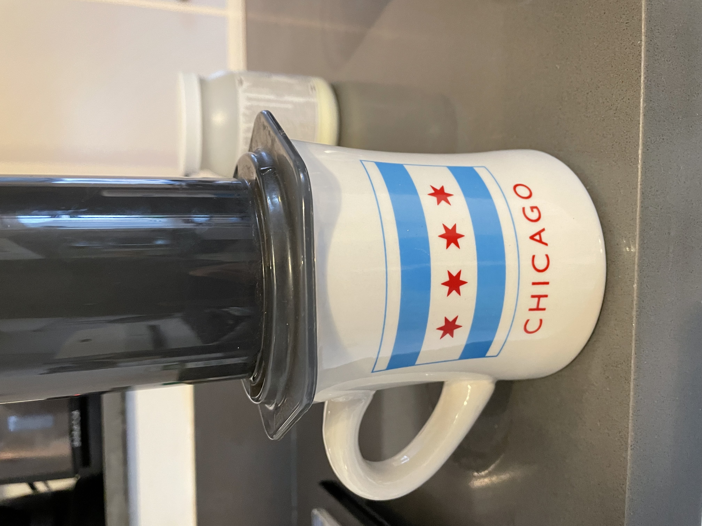

Aeropress
Aeropress

Description
Ever wanted to make only one cup of coffee? Ever wanted to make only one cup of coffee using a coffee-brewing device
invented by the guy who made the Aerobee Frisbee? Same. This is my personal favorite recipe to make one perfect
cup of coffee using the Aeropress, the way God intended.
Ingredients
- 18g Ground Coffee (something fancy)
- 300mg Water - just off boiling
- 10 minutes of patience
Steps
- Boil at least 500mg filtered water (the water is important!)
- Meanwhile, grind 18g of fresh, delicious coffee at a medium-fine grind.
- Place filter into cap and attach to Aeropress chamber. Place on top of mug.
- Pour hot water into chamber to wet the filter and pre-heat the coffee mug. Toss the water in the sink.
- Fill chamber with ground coffee and shake chamber to even the grounds.
- Pour 300mg of just-off-boiling water into chamber and place plunger on top to create a seal.
- After 2 minutes, carefully hold plunger in place, chamber on mug, and swish coffee around to remove sediment.
- At 2:30, plunge water and coffee through filter for another 30 seconds.
- Dispose filter, compost coffee beans, and rinse chamber.
- If you're like me, add a fair amount of coconut cream, a bit of sweetener, and enjoy with a nice book.